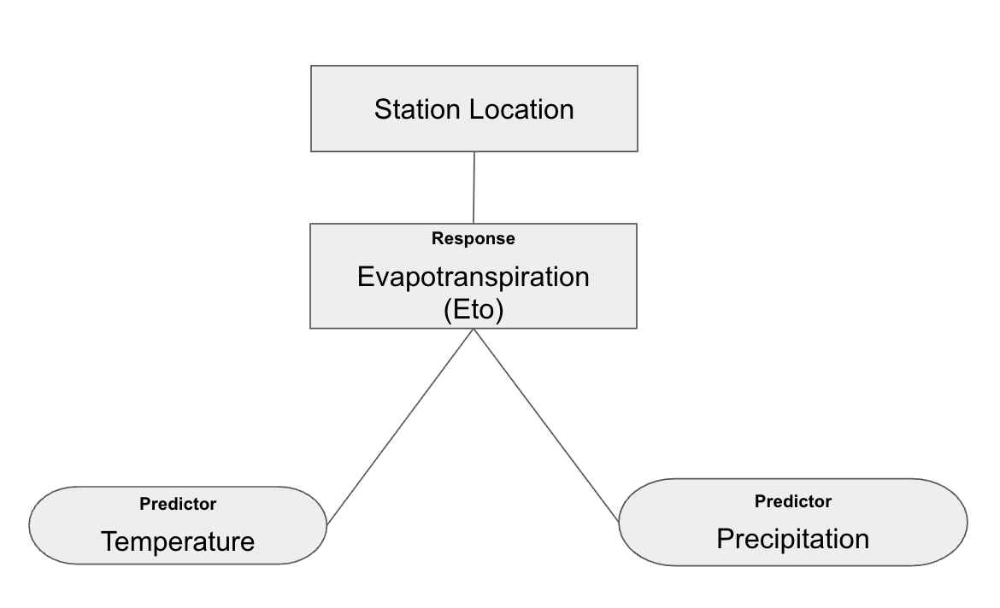
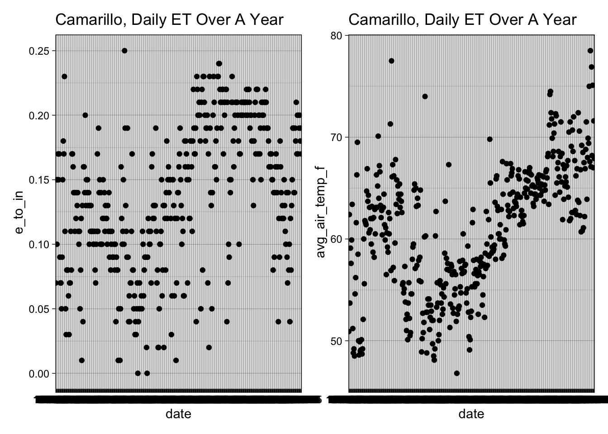

library(tidyverse)
library(here)
library(dplyr)
library(patchwork)
library(knitr)
library(lubridate)
library(purrr)
library(broom)
library(knitr)
set.seed(42)Evapotranspiration and Temperature in Camarillo, CA
From California Irrigation Managment Information System (CIMIS) Station
Import Libraries
Importing Data
eto <- read_csv(here("data/daily_eto_variance_CAM.csv"),
show_col_types = FALSE) %>%
janitor::clean_names()
daily <- read_csv(here("data/daily_data_CAM.csv"),
# R suggested to use
show_col_types = FALSE) %>%
# Helps not have 'qc...6, etc'
janitor::clean_names()
head(eto)Data Cleaning
# Dropping columns that have `qc`
# ETO Dataset
drop <- c("qc_6", "qc_8")
eto[ , !(names(eto) %in% drop)]
# DAILY Dataset
drops <- c("qc_")
daily[ , !(names(daily) %in% drops)]There is a columnn called ‘Average ETo (in)’ in the dataset. The Station itself has already calculated the Evapotranspiration using the Penman-Monteith (PM) equation.
\[ ET_0 = \frac{0.408 \, \Delta \, (R_n - G) + \gamma \frac{900}{T+273} \, u_2 \, (e_s - e_a)}{\Delta + \gamma (1 + 0.34 \, u_2)} \]
In this project I will use the Total ETo column as my Response Variable. The predictor variables will be Average Air Temperature (F) as well as Total Precipitation (in)
DAG Model
knitr::include_graphics(here::here("images/DAG.png"))
Data Exploratory
hist(daily$e_to_in)
#hist(daily$precip_in)
#hist(daily$temp)
p1 <- ggplot(data = daily,
aes(x = e_to_in)) +
geom_histogram() +
geom_vline(xintercept = mean(daily$e_to_in),
color = "red",
linetype = "dashed",
linewidth = 1)
p1`stat_bin()` using `bins = 30`. Pick better value with `binwidth`.
# Data type
class(daily$date)
summary(daily)
names(daily)
# Check NA's
colSums(is.na(daily))
colSums(is.na(eto))map1<- ggplot(data = daily, aes(x = precip_in, y = e_to_in)) +
geom_point() +
labs(title = "Camarillo, Daily ET Over A Year")+
theme_linedraw()
map2<-ggplot(data = daily, aes(x = avg_air_temp_f, y = e_to_in)) +
geom_point() +
labs(title = "Camarillo, Daily ET Over A Year")+
theme_linedraw()
(map1+map2)
map3 <- ggplot(data = eto, aes(x = date, y = avg_e_to_in)) +
geom_point() +
labs(title = "Camarillo, ET Over A Year")+
theme_linedraw()
map4 <-ggplot(data = daily, aes(x = date, y = avg_air_temp_f)) +
geom_point() +
labs(title = "Camarillo, Daily Temp Over A Year")+
theme_linedraw()
(map3+map4)
Joining Data
Data needs to be merged, to combine Precipitation and Temperature from the same station. To combine data it will be a left join using the date column since both datasets have a date column.
daily_eto <- left_join(eto, daily, by = "date") %>%
janitor::clean_names() %>%
# Remove ALL columns that start with "qc_" - Not needed
select(!starts_with("qc_")) %>%
# Drop double column of site name, number, and region
select(!starts_with(c("cimis_region_y","stn_name_y","stn_id_y")))
# Checking NA's
#colSums(is.na(daily_eto))
# View first 5 rows
head(daily_eto)After Joining plot
View how all the three variables (ETo, Precipitation, and Temperature) look in a scatterplot.
ggplot(data = daily_eto, aes(x = precip_in,
y = avg_air_temp_f)) +
# Fill points using ETo
geom_point(aes(color = e_to_in)) +
labs(title = "Viewing Variables",
subtitle = "ETo, Prepicitation, and Temperature",
x = "Precipitation (in)",
y = "Average Air Temperature (F)",
fill = "ETo")+
theme_linedraw()
In this figure we can see if there is a higher average air temperature (F) we can expect more ETo, compared to Precipitation.
Hypothesis:
- State your hypothesis for your final project. Using this week’s wildfire lab as an example, your hypothesis could be “The number of wildfires increases with vapor pressure deficit.” That’s an example of a scientific hypothesis. To state the equivalent statistical hypothesis, you first need a model. That’s the second goal of this checkpoint.
Evapotranspiration (ETo) increases with higher air temperature and decreases with higher precipitation.
$$ \[\begin{align} {Eto} &\sim{Gamma(\mu,\phi)} \end{align}\] $$
\[ \begin{align} log(\mu) = β0 + β1(Precipitation) + β2(Temperature) \end{align} \]
Mu = mean
Alpha = shape parameter
Evapotranspiration (ETo) is driven by vapor pressure deficit, radiation, and temperature. On days with higher precipitation, ETo tends to decrease because of cloud cover, lower radiation, and higher humidity.
- Describe your model in statistical notation using the appropriate response family, link function, and predictors. Then use your model to state a statistical hypothesis. Using the wildfire lab again as an example, your statistical hypothesis would be “H0: β_1 = 0; HA: β_1 > 0”.
- I model daily ETo for the Camarillo station using:
\[ \begin{align} Precipitation: H0 : B1 = 0 \\ HA : B1 < 0 \\ \end{align} \]
(Null : When there is no precipitation ETo stays the same. Alt: When there is precipitation, ETo decreases. )
\[ \begin{align} Temperature: H0 : B1 = 0 \\ HA : B1 > 0 \end{align} \]
(Null: When Temperature is the same, Eto stays the same. Alt: When Temperature increase there is more ETo)
- Eto = evapotranspiration (inches)
- Precipitation = Daily Precipitation (inches)
- Temperature = Average Daily Air Temperature (Farenheit)
- Using a Gamma Model and a link of a log allows to have fitted values of 0-1 remain positive.
Attempt at creating glm and interpretting results
Interested in Evapotranspiration (eto) and average temperature (avg_air_temp_f) in the location of Camarillo, California.
# This will remove any negative integers
daily_eto <- daily_eto %>%
# e_to_in is used since we are grabbing daily numbers
mutate(e_to_in_adj = e_to_in + 1e-6)
# Gamma regression for daily ETo
cam_gamma <- glm(
# Response ~ Predictor + Predictor
e_to_in_adj ~ precip_in + avg_air_temp_f,
data = daily_eto,
family = Gamma(link = "log"))
# Look at results
#summary(cam_gamma)
# equation
cam_gamma$formulae_to_in_adj ~ precip_in + avg_air_temp_f# Extract coefficients
B0 <- cam_gamma$coef[1]
B1 <- cam_gamma$coef[2]
B2 <- cam_gamma$coef[3]
# Using Kable and Broom Packages to display GLM Model Coefficients
tidy(cam_gamma) %>%
kable(digits = 3, caption = "Coefficient Estimates")| term | estimate | std.error | statistic | p.value |
|---|---|---|---|---|
| (Intercept) | -4.826 | 0.177 | -27.286 | 0 |
| precip_in | -1.495 | 0.168 | -8.920 | 0 |
| avg_air_temp_f | 0.046 | 0.003 | 16.086 | 0 |
“B0 = -4.83 (β₀): The expected ETo when precipitation (in) and temperature (F) are equal to 0.”
“B1 = -1.5 (β₁): For every 1-inch increase in precipitation,e_to_in_adj (ETo) will decrease, holding temperature constant.
“B2 = 0.05 (β₂): For each 1 (F) increase in mean air temperature, e_to_in_adj tends to increase, holding precipitation constant.”
All three coefficients hold a value of <2e-16, this implied that all three constants are highly significant. Both predictors have a strong effect on ETo. With more rain, the lower the ETo. With higher temperature the more ETo.
Expand Grid and Prediction Grid
# A grid of predictor(s) to generate predictions for
pred_grid <- expand.grid(
precip_in = seq(min(daily_eto$precip_in), max(daily_eto$precip_in),
length.out = 50),
avg_air_temp_f = seq(min(daily_eto$avg_air_temp_f), max(daily_eto$avg_air_temp_f),
length.out = 50))
# Generate our predictions
eto_pred <- pred_grid %>%
mutate(phi = predict(cam_gamma,
newdata = pred_grid,
type = "response"))Graph/ Plot
# Plot
plot1 <- ggplot(eto_pred, aes(x = precip_in, y = avg_air_temp_f)) +
geom_raster(aes(fill = phi)) +
geom_contour(aes(z = phi), color = "white", alpha = 0.6) +
# Scale - color fill
scale_fill_viridis_c() +
labs(
#title = "Predicted Evapotranspiration",
#subtitle = "Gamma Model Log Link",
x = "Precipitation (in)",
y = "Average Air Temperature (°F) ",
fill = "Predicted\nETo"
) +
theme_light()
plot2<- ggplot(eto_pred, aes(x = precip_in, y = phi, color = avg_air_temp_f)) +
geom_point(alpha = 0.5) +
geom_line() +
scale_color_viridis_c() +
labs(
#title = "Predicted ETo vs Precipitation",
#subtitle = "Gamma GLM with log link",
x = "Precipitation (in)",
y = "Predicted ETo (in)",
color = "Temperature (°F) "
) +
theme_light()
# Viewing Plots
(plot1 / plot2)
Hypothesis: (Eto decreases on wetter days) & (Eto increases with temperature) Interp: In the figure shown above, the
Interp: The contour plot (top plot) shows as temperatures increases, the predicted ETo also increases. When there is more precipitation ETo decreases. The plot on the bottom showcases the same message, as temperature increases there is more ETo present. When precipitation increases there is a lower trend of ETo present. This can also be viewed as the lines start from the top and drop when precipitation increases. In this plot the temperature would be better showcases if arranged in levels to not have a clusters group. This is better showcased in the plot 3.
Confidence Intervals and Setting Bands for Temperature Levels
# Prediction grid with selected temperature levels
temp_levels <- c(50, 60, 70, 80)
pred_grid1 <- expand.grid(
precip_in = seq(min(daily_eto$precip_in), max(daily_eto$precip_in), length.out = 50),
avg_air_temp_f = temp_levels
)
# Predictions on response scale
eto_pred1 <- pred_grid1 %>%
mutate(lambda = predict(
object = cam_gamma,
newdata = pred_grid1,
type = "response"
))
# Prediction for Standard Error- This will be used for CI
eto_se <- predict(
object = cam_gamma,
newdata = pred_grid1,
type = "link",
se.fit = TRUE
)
# Inverse link function (exp for log link)
linkinv <- family(cam_gamma)$linkinv
eto_pred <- pred_grid1 %>%
mutate(
logit_p = eto_se$fit,
logit_p_se = eto_se$se.fit,
# 95% CI on link scale
logit_p_lwr = qnorm(0.025, mean = logit_p, sd = logit_p_se),
logit_p_upr = qnorm(0.975, mean = logit_p, sd = logit_p_se),
# Back-transform to response scale
phi = linkinv(logit_p),
phi_lwr = linkinv(logit_p_lwr),
phi_upr = linkinv(logit_p_upr)
)
# Plot with CI
plot3 <- ggplot(eto_pred, aes(x = precip_in, y = phi, color = factor(avg_air_temp_f))) +
geom_ribbon(aes(ymin = phi_lwr, ymax = phi_upr, fill = factor(avg_air_temp_f)),
alpha = 0.2, color = NA) +
geom_line() +
labs(
x = "Precipitation (in)",
y = "Predicted ETo (in)",
color = "Air Temp (°F)",
fill = "Air Temp (°F)"
) +
theme_light()
plot3
# View Plots Together
(plot1 / plot3) 
Interp: Plot 3 shows the relationship between expected daily evapotranspiration (ETo) and precipitation at various air temperature levels. Wetter days are associated with decreased atmospheric demand for water loss because ETo drops as precipitation increases across all temperatures. At any given precipitation level, higher air temperatures are associated with higher ETo because warmer air increases evaporative demand. When both temperature is low and precipitation is high, predicted ETo is lowest. The 95% confidence intervals for the model’s predictions are shown by the shaded ribbons. They display the range of anticipated ETo values for every temperature and precipitation combination that would result from repeatedly gathering new data and refitting the same model. Narrower ribbons indicate higher certainty in the predicted mean ETo, while wider ribbons indicate greater uncertainty.
Lastly, I combined all three plots together to demonstrate the same message shown in different ways. The main takeaway is when temperature increases drier days which hold and remove more water. When temperature decreases, minimal ETo is produced. This could be because of an increase in humidity, cloud cover, and rain events.
Simulation
Using Rgamma (n, shape, scale). References used Cross Validate and Gamma Positive Continuous Data.
# Number of observations
n <- 10000
# Simulate predictors
precip <- rnorm(n, mean = 0, sd = 2) # Precipitation
temp <- rnorm(n, mean = 65, sd = 10) # Avg. Temperature
# Generate Coefficients
beta0 <- -3 # Intercept - # ETo
beta1 <- -2 # Precipitation decreases with Eto
beta2 <- 0.05 # Temperature increases with Eto
# Expected mean on original scale
mu <- exp(beta0 + beta1 * precip + beta2 * temp)
# Gamma Arguments
shape_param <- 12
scale_param <- mu / shape_param
# Response variable - ETo
y <- rgamma(n, shape = shape_param, scale = scale_param)
# Make simulated data into a DF
simulated_data <- data.frame(
precip = precip,
temp = temp,
eto = y
)
# Simulation by fitting a Gamma GLM
sim_model <- glm(eto ~ precip + temp,
family = Gamma(link = "log"),
data = simulated_data)Comparing Summary Tables for Original and Simulated Data
#Make coefficient table pretty with kable and broom
tidy(sim_model) %>%
kable(digits = 3, caption = "Coefficient Estimates for Simulated Data")| term | estimate | std.error | statistic | p.value |
|---|---|---|---|---|
| (Intercept) | -2.989 | 0.019 | -158.636 | 0 |
| precip | -2.000 | 0.001 | -1393.988 | 0 |
| temp | 0.050 | 0.000 | 174.226 | 0 |
# Using Kable and Broom Packages to display GLM Model Coefficients
tidy(cam_gamma) %>%
kable(digits = 3, caption = "Coefficient Estimates")| term | estimate | std.error | statistic | p.value |
|---|---|---|---|---|
| (Intercept) | -4.826 | 0.177 | -27.286 | 0 |
| precip_in | -1.495 | 0.168 | -8.920 | 0 |
| avg_air_temp_f | 0.046 | 0.003 | 16.086 | 0 |
Take-Aways:
From the simulated data, ETo has a higher baseline (B0 = -3) compared to the original data (B0 = -4 ). The effect of precipitation is stronger (B1 = -2) and the effect of temperature is slightly stronger (B2 = 0.05) in the simulation. The standard errors are much smaller in the simulated data, reflecting the large sample size and controlled variability, while the original data show larger standard errors due to measurement uncertainty. Overall, both models indicate that precipitation and temperature significantly influence ETo.
References
- Cross Validated. Stack Exchange. How to simulate data for a Gamma glm. Link.
- EDS 222- Statistic for Data Science. Week 8. Lab 8 California Wildfire Occurrence. Link.
- Gamma Positive Continuous Data Part 1: Intro, Mean-Variance Relationship.RPub.Link.
- Micheal Foley. Gamma Distribution. January 17, 2029.Link.